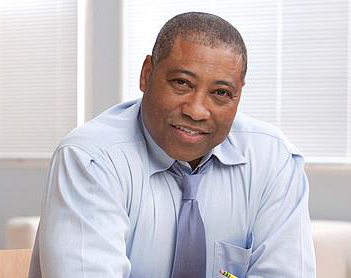
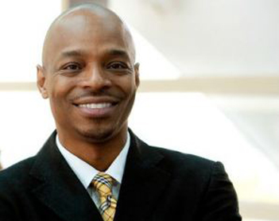

Taofik Adegbite
CHIEF EXECUTIVE OFFICERTaofik Adegbite is currently the Chief Executive Officer of Marine Platforms. He is responsible for the company’s strategy formulation and execution, corporate governance, policy development, planning and development and local content growth and promotion.
He studied Computer Science at the University of Ibadan in Nigeria and after graduation, he started his career with the Agricultural Project Monitoring & Evaluation Unit, (World Bank Project). He later proceeded to the United Kingdom where he received his CISCO certification and worked with National Health Service (NHS) as an Information Technology Engineer. After a brief time in the United Kingdom, Taofik joined Marine Platforms in 2001 assumed the role of Director of Strategy and Business Development, he has since progressed to become the CEO and a key player in the Nigerian Oil & Gas and Maritime Sectors.
Taofik pursued his interests in business strategy by attending the London School of Economics’ certificate course in Strategy & Organization Management in 2006 and the Harvard Business School Owner/President Management (OPM 44) in 2014.
In August 2018, Taofik was appointed as the Honorary Consul General for Norway and he is tasked with promoting and facilitating relations and commercial ties between Norway and Nigeria. He has served on the committee for the review of the activities and operations of the Nigerian Ship Registration Office and he is also a member of the Commonwealth Enterprise and Investment Advisory Council.
He is happily married with children and they reside in Lagos, Nigeria
Biodun Odunsi
CHIEF OPERATING OFFICERBiodun is a retired banker. He started his career with Commerce Securities and Trust Limited, a Stock Broking firm in 1992 as an Officer. He rose to the level of Unit Head, Capital Markets, before leaving to join Metropolitan Merchant Bank Limited where he worked in the Treasury Department as Head, of Forex Unit.
In 1997, He left Metropolitan Merchant Bank to join Peak Merchant Bank. While there, Biodun at various times headed Treasury and Operations Departments. In 2002, he left Peak Merchant Bank to join Marine Platforms as the Director, Operations before becoming the Chief Operating Officer.
Biodun schooled at the University of Ibadan where he bagged a degree in Agricultural Economics and the MIT Sloan School of Management, Cambridge for a certificate course in Strategic Supply Chain Management.

Angus Kerr
CHIEF TECHNICAL OFFICERIn 1982, Angus started his career with Santa Fe Underwater services as an ROV Pilot Technician, through the period where the company changed hands to Sonat Subsea then Oceaneering rose to the level of ROV Supervisor in 1987.
Between 1990 and 1997, became an ROV Superintendent and finally Project Superintendent before going onshore as Project Manager with Son sub. In 2001, he joined Technip Offshore Limited as the Remote Systems Unit Operations Manager responsible for the management of the ROV and tooling systems deployed both on Technip and third party vessels worldwide.
In 2005 he became the General Manager at Canyon Offshore and eventually, the Vice President for the European and West African region. In 2009, he joined Marine Platforms as the Chief Technical Officer and Subsea services Director.

Baji Nyam
CHIEF FINANCIAL OFFICERBaji started his working career with International Merchant Bank in 1987, as a Youth Corp Member until 1993 when he left for a primary mortgage institution, KSL Savings and Loans Limited. He later worked with FSB International Bank Plc.
During his stint at FSB (1995-2003), Baji was responsible for setting up, and managing to profitability their Victoria Island Branch. He moved on to head the Lagos Area Commercial Banking Department, overseeing the five largest branches of the bank in Lagos.
He retired from banking as a Senior Manager in January 2003 to join Marine Platforms Limited as the Director, Finance and Administration before his change of designation to Chief Finance Officer.
Baji attended the Ahmadu Bello University, Zaria where he bagged a degree in Accounting. He became a member of the Institute of Chartered Accountants of Nigeria (ICAN) in 1991 and later attended the Wharton school, University of Pennsylvania for a certificate course in Financial Strategy.
Taofik Adegbite
Chief executive officer
Chief executive officer
Biodun Odunsi
Chief Operating Officer
Chief Operating Officer
Angus Kerr
Chief Technical Officer
Chief Technical Officer